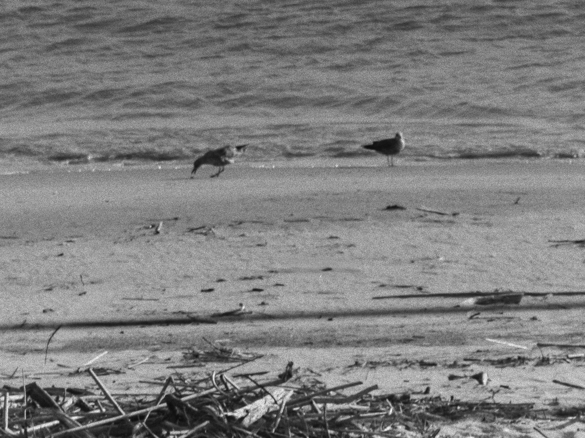
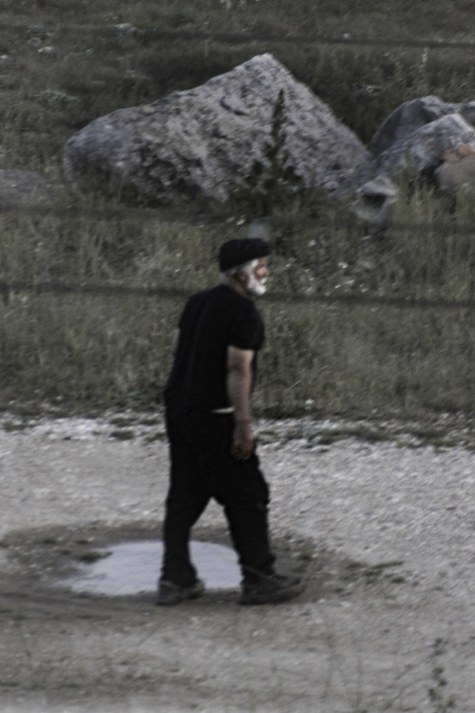
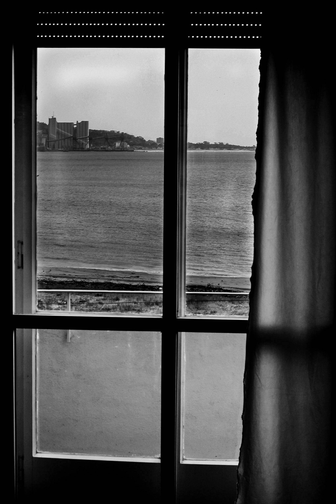

O que permanece depois da passagem não é apenas o lugar, mas a sua alteração. A paisagem torna-se vestígio de um acontecimento que já não está presente, mas que continua a inscrever-se na matéria.
Depois do mar



